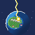
When you start a game the world is already running. Four peoples already have towns and farms, and are already wary of each other.
You do not play a character. You have a cursor, a supply of Faith, and 48 powers to spend it on — anything from a rain shower to a nuclear strike. The rest happens by itself: farmers plant and harvest, lords grow old and are replaced, kingdoms fight, towns burn down, and a log records it.
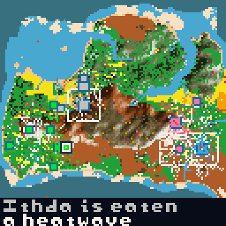
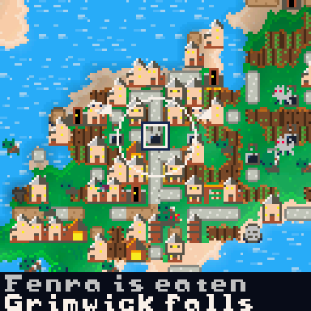
A good way to begin is to watch. Set the speed to ×3, read the two lines of news at the bottom of the screen, and see which town is growing fastest. Then decide whether to help it.
Hold RB to switch between them. It is the same world either way.
The whole map at once. Each kingdom’s land is tinted its colour and capitals are marked. You can also switch the map to show tech level, religion or town size instead of borders (MENU → MAP). Use this to see where borders are moving.
About 16 by 14 cells of ground with everyone drawn individually — farmers, soldiers, elders, the lord in a crown. Buildings show their age: a wooden hall becomes a stone keep and then a castle; dirt tracks become cobbles and eventually tarmac. Use this to see why the border moved.
The bottom two lines show the last two things that happened. Long lines scroll sideways so you can read them. In the log screen you can select an entry to jump to where it happened.
Everyone is simulated separately: a name, an age, a job, a partner, a mood, some personality traits, and whatever they have decided to do right now.
They choose what to do by comparing their options — run away, eat, work, find a partner, fight, put out a fire — so a crowd is hundreds of separate decisions rather than a script. Things you will see them doing:
Fetching wood, stone, iron and gold. Sowing and harvesting. Paving streets. Putting up whatever the lord has decided to build. Nothing gets built in a town unless someone walks there and builds it.
Villagers who are fed and have no work take a break: a walk along the streets, a trip out of town, a game by the monument, or a lie in the sun. It makes them happier, and happier people have more children and are more loyal.
Soldiers stay near their lord and drive off wolves that come close. Priests sit at the temple and cheer up whoever is nearby. Traders take caravans to other towns.
Humans, elves, dwarves and orcs all live in the same world and build the same things, but their towns are laid out differently and their sprites are their own. The last three only appear through disasters and powers: skeletons rise from graveyards, ghosts appear in ruins, and demons are summoned.
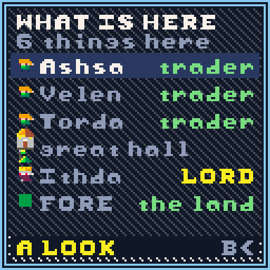
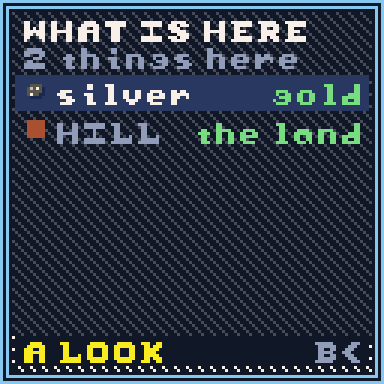
A town is streets with buildings along them, and everything in it was carried there by someone.
The lord picks what to build next based on what the town is short of. The town’s stores pay for it. Then it stays as an outline until a builder walks over and puts it up. The same is true of paving, new fields, planted trees and monuments. A small wooden stake on the ground means work that is waiting for someone to do it.
Each town uses one of five street plans. Races tend towards particular ones, but it is not fixed:
| Plan | What you see |
|---|---|
| Grid | A main street with side lanes. Block size, spacing, offsets and lane length all vary, so two grid towns still look different. |
| Radial | Streets radiating from the centre with a ring road around them. |
| Ribbon | One long street with houses down both sides. |
| Organic | No plan. A lane wanders out from the centre and side lanes branch off it. |
| Green | Houses around an open common. Nothing is allowed to build on the common. |
Houses and farms first, then a stone hall. The stone hall is what allows walls, a barracks and a temple. After that the town works up the list as its kingdom learns new technology: granary, market, library, foundry, college, hospital, factory, station, power station, missile silo.
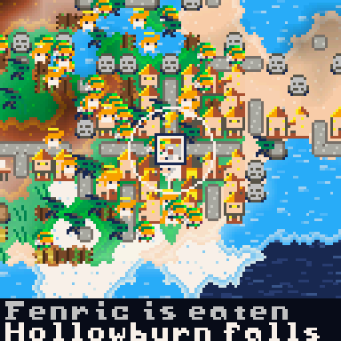
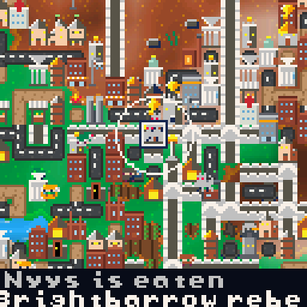
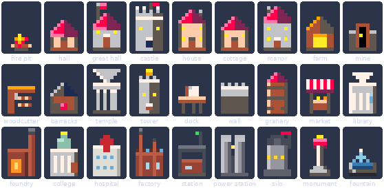
The fire pit appears when a town is founded. Everything else has to be chosen by the lord, paid for out of the town stores, and built by a villager.
Enemy soldiers and wild animals cannot walk through a wall. The town’s own people can. An attacking army has to stop outside, and soldiers standing next to a wall will break through it after a while. Towers on the wall shoot at any enemy within four cells.
There are four ways to feed a town, and you can see all four happening.
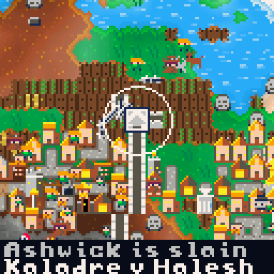
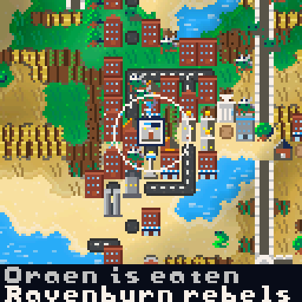
A farmer walks to an empty field and sows it. The crop grows on its own. A farmer comes back, harvests it, and carries it home. Each field is on its own timer, so a belt of fields shows bare earth, seed, shoots, full crop and ripe crop all at the same time. Casting rain moves every field in range on one stage.
Deer, boar, sheep, hens and goats can be eaten. Wolves, wild dogs, snakes, spiders and bats hunt other animals, and will attack people who are away from their own land. Predators and prey have separate population limits, so killing off the wolves does not fill the world with deer.
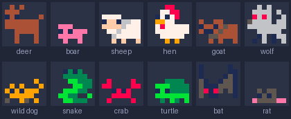
A town with a farm buys two animals. The flock breeds up to the size the town can feed, produces a little food every year, and gets eaten when the store runs low. Wolves will not come into the pasture.
When food runs short, villagers hunt wild animals — deer, boar, goat, hen, rat. One carcass is worth about two and a half berry bushes. Hunt too much and the wildlife starts to run out.
A dock lets villagers fish the water next to it. A coastal town can live mostly on fish; an inland one gets nothing from the building.
Each town has a lord, and the lord is one of its villagers. You can find them at the hall, or from the town screen.
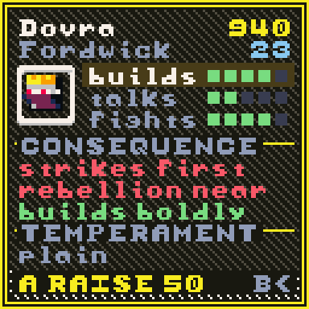
Traits matter too. An ambitious lord builds a monument to himself early and costs his kingdom a lot of loyalty. A vengeful lord in a capital makes wars more likely.
Lords age and die like anyone else, and the town picks a new one from its own people. It prefers the old lord’s family while any of them are still alive, so one family can hold a town for generations. A lord can also be killed by a wolf or in a war, which is why soldiers stay close to them.
You can spend Faith on a lord. 50 Faith adds 20 to one stat. This is usually the cheapest way to change what a kingdom does, because most of a town’s decisions come from the person in the hall.
A kingdom is a group of towns, and towns can change hands.
Kingdoms weigh up how close they are, how big their armies are, past grudges, how tired they are of fighting, the temper of the lord in the capital, and what the other side has. A kingdom with no iron next to one with plenty is much more likely to attack. A kingdom with only one town will not start a war.
If enemy soldiers reach a town’s hall and its own people are not there to defend it, the town changes owner. It keeps its buildings, fields and people, but flies a new flag and starts with very low loyalty — so you may have to hold it.
Loyalty rises or falls depending on how far the town is from its capital, how tired of war the kingdom is, how happy the town is, and who its lord is. If loyalty stays below zero long enough, the town breaks away as a new kingdom and immediately goes to war with the one it left. Distance matters most, so large empires tend to lose their outer towns on their own.
Caravans carry spare food and materials to towns that need them. Inside a kingdom it is free; across a peaceful border it is a sale and brings back gold. Two kingdoms with a common enemy, or a shared race or religion, and a capable lord in the capital may become allies.
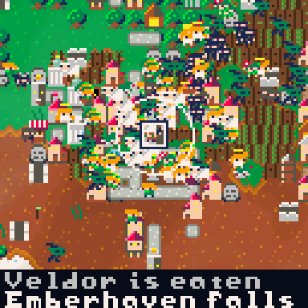
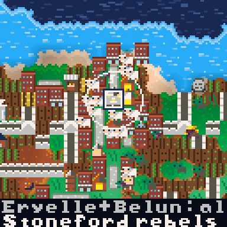
35 technologies across nine eras. Each one changes something you can see.
Kingdoms earn research from their people, their temples, libraries and colleges, and their trade. What a kingdom knows decides what its towns can build, what its soldiers throw, and what its roads are made of, so you can usually tell a kingdom’s era just by looking at one of its towns.
A kingdom that is doing well finishes the tree somewhere in the third or fourth century. One that is doing badly can spend the whole game in the iron age.
48 powers in six pages. They cost Faith, which builds up from how happy your followers are and how many temples they have built. There is a maximum you can hold.
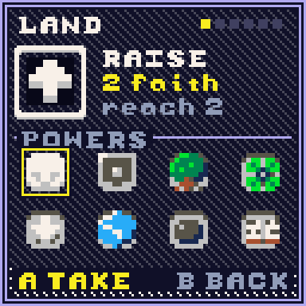
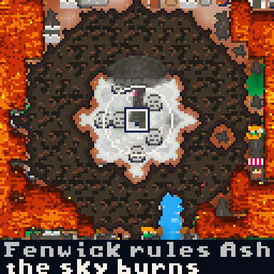
| Page | What is on it |
|---|---|
| LAND | Raise and lower ground, plant forest, build roads, add water, change one terrain type into another. |
| LIFE | Rain, fertility, healing, inspiration, peace, gold seams, blessings, resurrection. |
| PEOPLE | Found a village, add settlers of any of the four races, herds of animals, wolves. |
| WRATH | Fire, meteor, earthquake, flood, lightning, plague, madness, a volcano that leaves a mountain behind, and a nuclear strike. |
| BEASTS | Seven monsters you can summon. An army can kill any of them. |
| MIND | Effects on individual people: bless, mark, enrage, make immortal. |
If a power has no effect — a blessing with nobody nearby, or a village on ground that will not take one — you get the Faith back.
There are eight. An army with enough soldiers can kill any of them. The angel is the only one that helps rather than attacks.
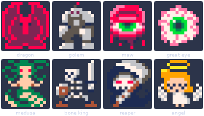
Looking things up is a large part of the game. RB moves out one level each time: from a person to their town, then their kingdom, then the world.
Press B on any cell. Lists everyone and everything on it, so you can pick which one of a crowd to look at, plus the resources and the ground itself.
Name, family, age, job, partner, mood, hunger, health and traits. Press A to spend Faith on their health, hunger, mood or personality.
Their three stats, what those stats currently mean for the town, and 50 Faith to raise one.
Size, population against available housing, religion, its lord, its stores and what has been built. Press A for the lord.
Era, research progress, a bar for each town, and who it is at war with.
Every kingdom with its era and number of towns, and the total population.
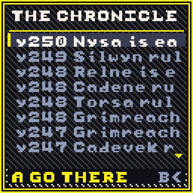
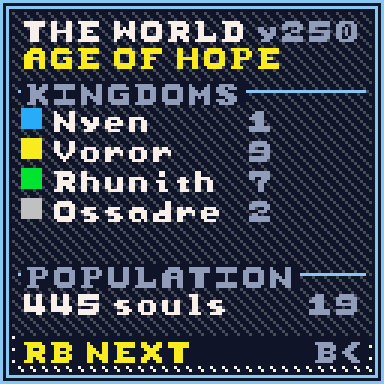
Five speeds from paused to ×25, in the game menu. ×3 is comfortable for watching; ×25 is for skipping ahead a century.
Eleven on/off switches for what the world is allowed to do: disasters, war, rebellion, plague, ageing, having children, monsters, historical ages, and Follow History, which moves the camera to each new event when you are not touching the controls.
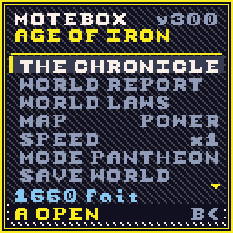
The world moves through historical ages by itself — the Age of Hope, the Age of Iron, the Age of Ash and so on. Each one changes the simulation while it lasts: how well crops grow, how likely wars are, how often disasters happen. The colours on screen shift with it.
You can save the whole world. Save from the game menu and everything is kept: the map, every person, every kingdom and the whole log. A world you spent an hour on will still be there tomorrow.